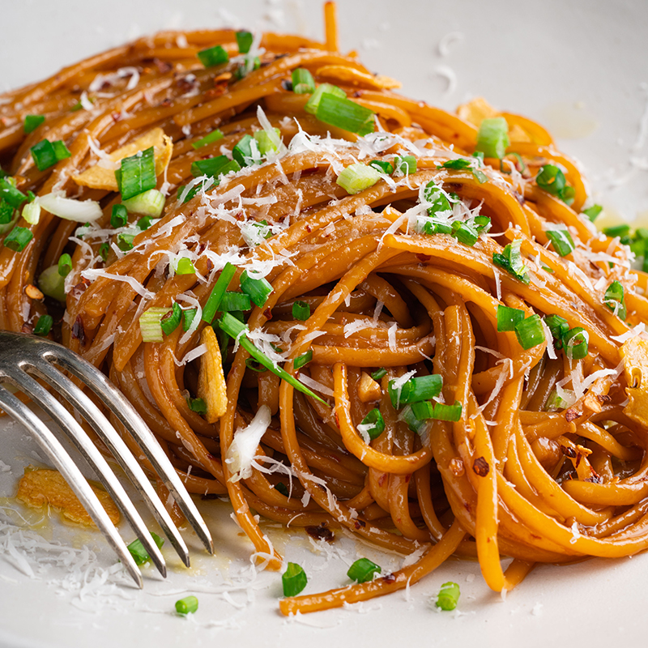

Spicy Garlic Noodles

Description
This spicy fusion of umami soy and oyster sauces and Parmesan cheese will have you reaching for thirds and fourths.
Ingredients
- 1 lb spaghetti
- 1/4 cup butter, unsalted
- 8 garlic cloves, minced
- 2 tsp chili flakes
- 1/3 cup soy sauce
- 1/3 cup oyster sauce
- 6 tbsp Parmesan cheese, finely grated
Garlic oil:
- 1/3 cup extra virgin olive oil
- 6 garlic cloves, finely sliced
Steps
- To make the garlic oil, place the oil and the garlic in a small saucepan over medium heat. Once the garlic is sizzling, cook for 2-3 minutes or until the garlic is just starting to turn golden at the edges. Transfer to a heat-proof bowl and set aside for later (the garlic will continue cooking and turn evenly golden in the bowl).
- Heat a large pot of salted water over high heat. When boiling rapidly, add the pasta and cook until al dente.
- While the pasta is cooking, add the butter, garlic and chilli flakes into a large frying pan over medium-high heat. Cook stirring until the butter is just melted (you want the garlic to soften but not colour), then add the soy sauce and oyster sauce. Simmer for a minute and then take off the heat until the pasta is cooked.
- When the pasta is al dente, reserve a cup of pasta cooking liquid in case you need it later. Place the butter sauce back on the heat and add the pasta straight into the pan. Cook, stirring, for 3-4 minutes or until the liquid has been absorbed by the pasta and everything is looking super glossy and thick. Toss through the parmesan cheese (add a little pasta cooking water here if necessary). Divide among serving plates. Top with a drizzle of garlic oil and some garlic chips. Sprinkle with spring onion and add extra cheese.